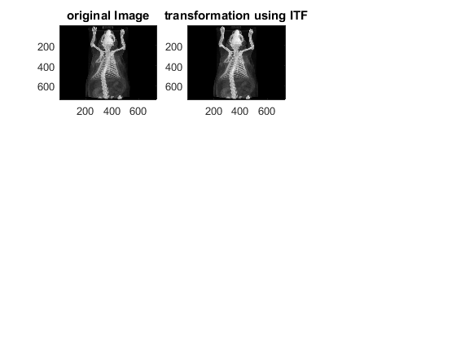
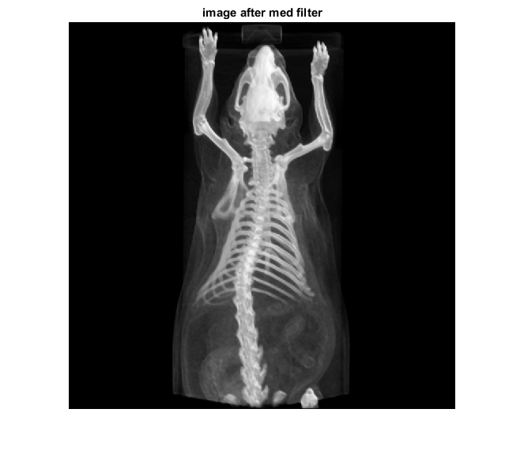

clc
clear all
close all
original=double(imread('MouseCT.jpg'));
subplot(3,3,1),colormap(gray(256))
image(original),title('original Image')
trans=256.*((original-min(original(:)))./(max(original(:))-min(original(:))));
subplot(3,3,2)
image(trans),title('transformation using ITF')
trans1=zeros(size(trans)+2);
trans2=zeros(size(trans));
for x=1:size(trans,1)
for y=1:size(trans,2)
trans1(x+1,y+1)=trans(x,y);
end
end
for i= 1:size(trans1,1)-2
for j=1:size(trans2,2)-2
window=zeros(9,1);
k=1;
for x=1:3
for y=1:3
window(k)=trans1(i+x-1,j+y-1);
k=k+1;
end
end
medi=sort(window);
trans2(i,j)=medi(5);
end
end
trans2=uint8(trans2);
figure,imshow(trans2)
title('image after med filter')
Warning: Image is too big to fit on screen; displaying at 67%
 